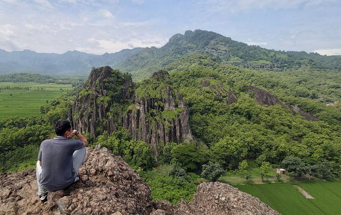
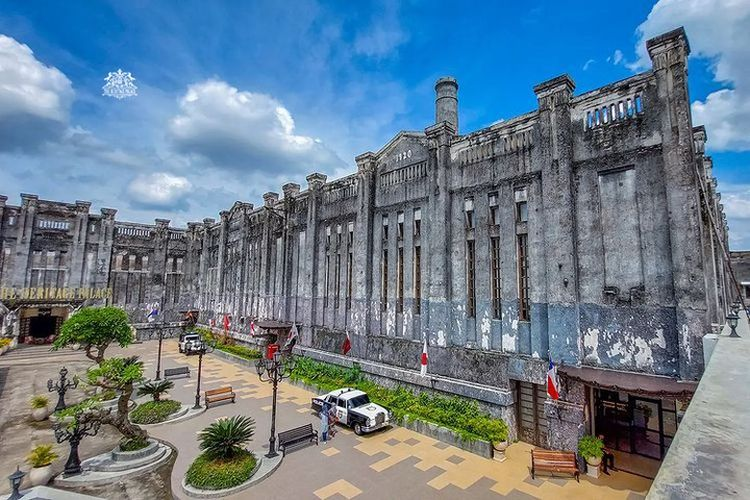

Kabupaten Sukoharjo adalah salah satu kabupaten yang terletak di Provinsi Jawa Tengah, Indonesia. Kabupaten ini memiliki keindahan alam, warisan budaya, serta potensi ekonomi yang menarik. Dalam artikel ini, kita akan menjelajahi pesona Kabupaten Sukoharjo dari berbagai aspek. Kabupaten Sukoharjo memiliki warisan sejarah yang kaya. Kota Gede, yang terletak di wilayah Kabupaten Sukoharjo, adalah salah satu tempat bersejarah yang menarik untuk dikunjungi. Kota Gede adalah ibu kota Kerajaan Mataram Islam pada abad ke-16. Pengaruh sejarah ini masih terlihat dalam arsitektur dan budaya setempat. Selain Kota Gede, Kabupaten Sukoharjo juga memiliki situs-situs bersejarah lainnya seperti Makam Raja-raja Mataram, Candi Sukuh, dan Candi Cetho. Wisatawan dapat menjelajahi situs-situs ini untuk memahami lebih dalam sejarah dan budaya Jawa Tengah.
Geografis
Kabupaten Sukoharjo berada di bagian tengah Pulau Jawa dan berbatasan dengan kabupaten-kabupaten tetangga, seperti Kabupaten Karanganyar di sebelah utara, Kabupaten Boyolali di sebelah timur, Kabupaten Wonogiri di sebelah selatan, dan Kabupaten Surakarta (Kota Surakarta) di sebelah barat. Wilayah Kabupaten Sukoharjo memiliki ciri khas geografis berupa perbukitan dan dataran rendah yang cocok untuk pertanian, terutama tanaman padi, tebu, dan sayuran. Selain itu, Kabupaten Sukoharjo juga memiliki beberapa sungai, termasuk Sungai Bengawan Solo yang menjadi salah satu sungai terbesar di Jawa. Dengan letaknya yang strategis di Jawa Tengah dan akses yang baik ke berbagai daerah di Pulau Jawa, Kabupaten Sukoharjo memiliki potensi ekonomi yang signifikan, serta merupakan pusat budaya dan industri yang berkembang pesat
Wisata
Wisata Kabupaten Sukoharjo dapat didefinisikan sebagai rangkaian pengalaman perjalanan yang mencakup beragam tujuan menarik di Kabupaten Sukoharjo, Provinsi Jawa Tengah, Indonesia. Ini melibatkan eksplorasi dan penikmatan terhadap kekayaan budaya, sejarah, alam, dan potensi ekonomi yang dimiliki oleh kabupaten ini. Wisata di Kabupaten Sukoharjo mencakup kunjungan ke situs-situs bersejarah, keindahan alam, wisata kuliner, dan pengalaman yang terkait dengan industri kreatif dan ekonomi lokal. Wisata ini memberikan peluang bagi pengunjung untuk merasakan pesona dan keragaman yang ditawarkan oleh daerah ini, serta berinteraksi dengan masyarakat setempat.
The Heritage Place
The Heritage Place merupakan salah satu wisata yang ada di Kabupaten Sukoharjo. Di sana merupakan tempat bersejarah yang biasanya dimanfaatkan pengunjung untuk berfoto foto